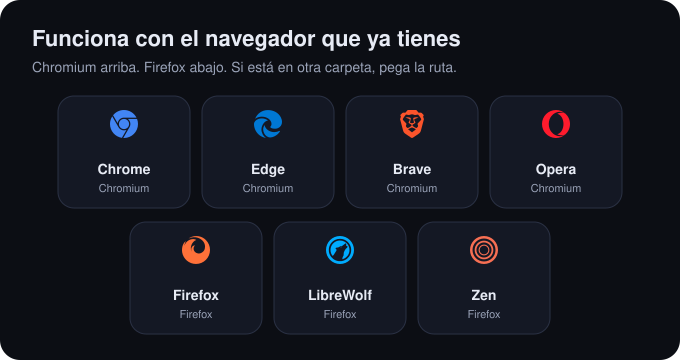

Instalación
Python 3.11 o más nuevo, y un navegador con el que Teams pueda abrirse. Selenium 4 trae el driver.
pip install teams-scraper
teams-scraper initinit pregunta el idioma, el navegador y la carpeta de datos. Abre Teams, dejas marcadas las clases con [x] y [ ], y luego pide el docente y un atajo. Puedes correrlo otra vez y cambiar solo una parte. El recorrido está en Primer uso.
Desde el repositorio
git clone https://github.com/notnomoro/teams-scraper.git
cd teams-scraper
pip install -e .El navegador
Chrome, Edge, Brave y Opera son Chromium. Firefox, LibreWolf y Zen son Firefox. Si el tuyo está en otra carpeta, pega la ruta.

El perfil se queda en la carpeta de datos. No es el perfil con el que navegas cada día, así que un navegador que ya usas puede seguir sin sesión aquí.
Si ese perfil no está logueado en Teams, la corrida abre la ventana y te pide que inicies sesión. Pulsa Enter en la terminal cuando Teams esté listo. Desde código, ese caso lanza auth.login_required y no se queda esperando.
Carpeta de datos
La carpeta por defecto es datos/ en el directorio actual. teams-scraper init puede dejarla en otro sitio. Una corrida puede usar --data DIR sin cambiar la config guardada.
Ahí están config.json, el perfil del navegador, teams.db, las copias JSON y descargas/. No la subas al repositorio. Mira Privacidad.
Comprobar
teams-scraper --help
teams-scraper --version--help lista los comandos. Una lectura sin config se detiene con config.missing y te dice que corras init.

Actualizar
pip install --upgrade teams-scraperDesde un clon, haz pull y vuelve a correr pip install -e .. La carpeta de datos se queda donde la dejaste.